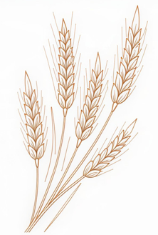
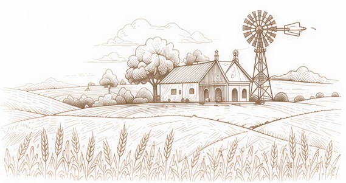
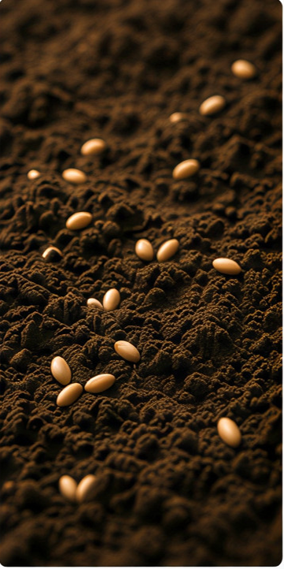
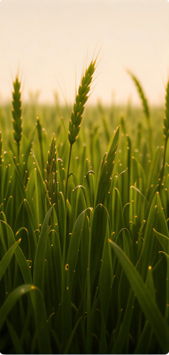
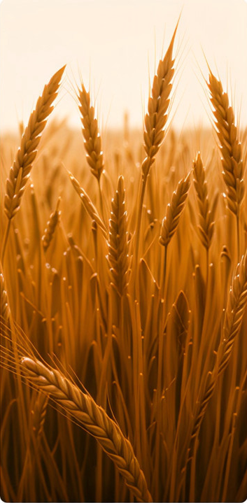
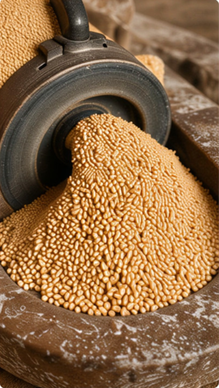
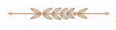
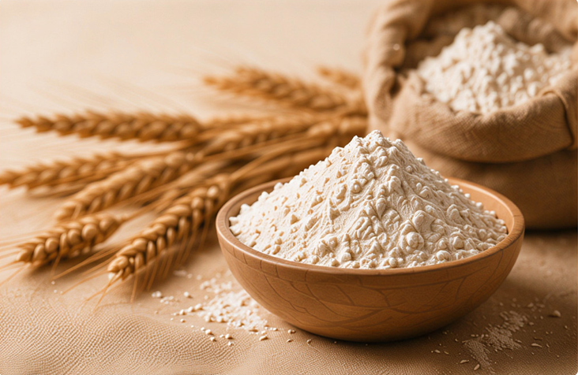
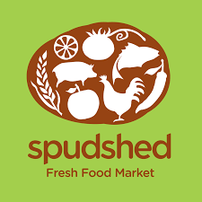

From Our Farm to Your Table.
At Kesari, we control every step, from planting the seed to milling the flour. Experience the difference of truly farm to table wheat products, cultivated and crafted with care on our own lands.
Our Story
The Journey of Our Grain
Every grain tells a story that begins in our soil and ends at your table. Follow the journey of how we transform seeds into the finest flour.

Planting
We begin by selecting and planting the finest wheat seeds in our nutrient-rich soil.

Growing
Over months, we nurture our wheat as it grows strong and tall in our sustainable fields.

Harvesting
At peak ripeness, we harvest our golden wheat, gathering the fruits of our patient care.

Milling
Finally, we mill our wheat using traditional stone grinding to preserve every nutrient.

Quality is not just our promise, it's our heritage.
At Kesari, quality is not just a promise, it's our heritage. Every bag of flour we produce meets the highest standards of purity and nutrition.
No artificial additives or preservatives
Rigorous quality testing at every stage
Full traceability from field to package


Find our products in..

Proudly available at Spudshed stores across Western Australia.
View LocationsWe'd love to hear from you.
Have questions about our products or want to learn more about our traditional milling process? Send us a message and we'll get back to you as soon as possible.